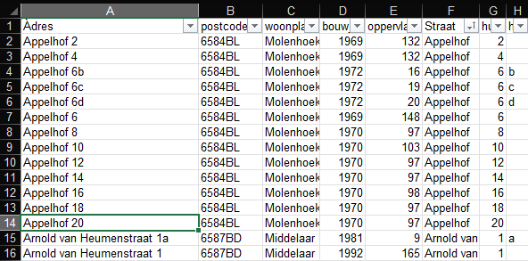
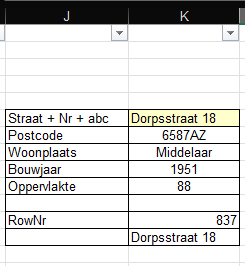

Het BAG register bevat het bouwjaar en het gebruikersoppervlakte van iedere woning. Het is de bedoeling dat je een klein deel van dit BAG register, namelijk een beperkte set gegevens van je eigen woonplaats of woonwijk in het rekenblad laadt.
Als je af en toe een woning in een andere gemeente doet, is het niet nodig die gemeente ook te laden, immers het handmatig opzoeken van deze 2 gegevens en in te vullen in het basis tabblad kost geen moeite.
De inhoud van het tabblad ziet er als volgt uit. Da data is gesorteerd op straatnaam + huisnummer.

Om te zien of de data goed is geladen, kun je in cel K6 een bestaande straatnaam + nummer invullen, als de data correct is, worden eronder correcte gegevens weergegeven.

Selecteren van een gemeente
Stap 0: browse linksboven naar de database GeoPackage: bag-light.gpkg
- Links-Boven, Open de package
- Links-Boven, Dubbelklik woonplaats (gaat naar beneden en zie je in het hoofdveld)
- Woonplaats layer (beneden) , rechtsklik | filter (deze query is case-sensitive)
"woonplaats"="Mook" OR
"woonplaats"="Molenhoek" OR
"woonplaats"="Middelaar" OR
"woonplaats"="Plasmolen"
- Links-boven, Dubbelklik op verblijfsobjecten
- BELANGRIJK (omdat het anders tering lang duurt), zoom maximaal in op het gefilterde gebied
- Command balk Tools(soort sterretje), rechts opent zicht een lijst net tools
- Zoek hierin "Clip" en activeer deze met dubbelklik
- Invoerlaag = Verblijfsobjecten
- Overlaylaag = Woonplaats
- Nu verschijnt een nieuwe layer "clipped"
- Rechtsklik op clipped en export
Stap 1: Laad de woonplaats Utrecht in.
Door dubbel op ‘woonplaats’ te klikken binnen de BAG GeoPackage wordt de laag met woonplaatsen geladen in
QGIS. Met de rechtermuisknop kunt u op deze laag ‘woonplaats’ klikken waardoor er verschillende opties
zichtbaar worden, waaronder de optie ‘Filteren’. Met deze optie kunt u enkel de gegevens van een woonplaats
filteren, zoals Utrecht in dit voorbeeld. In de Querybuilder voert u in de query: "woonplaats" = 'Utrecht' in en klikt
u op ‘OK’. In het scherm wordt als resultaat de geometrie van de woonplaats Utrecht getoond.
Voordat u verder gaat met de selectie van de gegevens, zoomt u eerst in totdat de woonplaats Utrecht
schermvullend is. Dit zorgt ervoor dat het laden van de gegevens in de volgende stap minder doorlooptijd kost.
Stap 2: Laad de gegevens van de verblijfsobjecten in.
In tegenstelling tot bij de meeste andere producten van de BAG zijn in de BAG GeoPackage de adressen
verzameld bij de verblijfobjecten. Door deze informatie te exporteren, kunt u over een lijst van alle adressen
beschikken.
Kadaster ¿ Beschrijving BAG GeoPackage
Inhoud en mogelijkheden van de BAG GeoPackage
Versie 1.0 ¿ 5 / 9
Door dubbel te klikken op het verblijfsobject, kunt u de verblijfsobjecten inladen. U zult zien dat de bolletjes van
de verblijfsobjecten ook doorlopen buiten het gebied van Utrecht. Dit gaan we filteren in de volgende stap.
Stap 3: Filter op enkel de verblijfsobjecten binnen de woonplaats Utrecht
Bovenin de taakbalk is de functionaliteit ‘Toolbox’ beschikbaar. Hiermee is te zoeken binnen de
beschikbare functionaliteiten van QGIS. Door op ‘Toolbox’ te klikken, wordt er aan de rechterzijde van het scherm
een zoekscherm geopend. Voor het filteren gaan we gebruikmaken van de functionaliteit genaamd ‘Clippen’.
Deze functionaliteit vindt u door in de zoekterm ‘clippen’ in te vullen. Door dubbel te klikken op het woord ‘clippen’
kunt u de functie raadplegen.
De invoerlaag is de laag met de verblijfsobjecten en de overleglaag is de laag met de woonplaats, zoals hieronder
is weergegeven. Na het selecteren van de juiste lagen, klikt u op ‘Uitvoeren’ waarna u op ‘Close’ kunt klikken
Download Geopackage: https://service.pdok.nl/lv/bag/atom/bag.xml
Installeer het freeware programma QGIS: https://www.qgis.org/en/site/forusers/download.html
Voorbeelden om data te extraheren en te exporteren naar het gewenst bestandformaat:
https://www.kadaster.nl/documents/1953498/3143362/Beschrijving+BAG+GeoPackage.pdf/161c2988-ad44-41dd-4d16-79faf2ed9b92?t=1660211275893#%5B%7B%22num%22%3A30%2C%22gen%22%3A0%7D%2C%7B%22name%22%3A%22XYZ%22%7D%2C82%2C396%2C0%5D